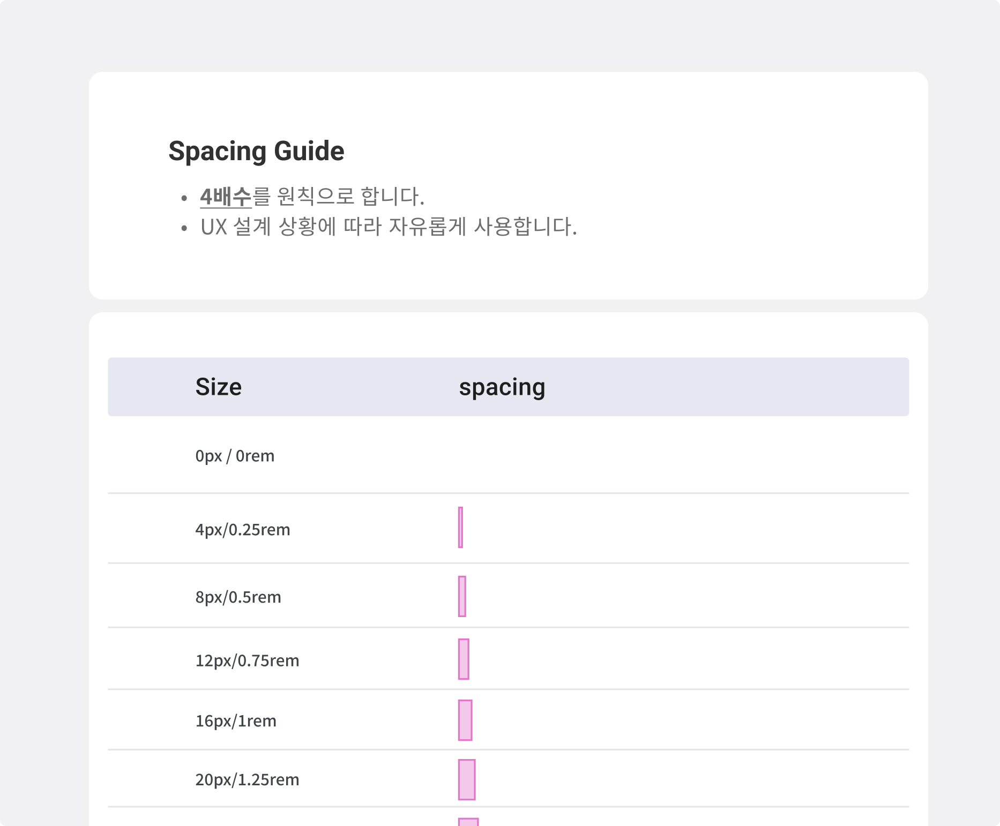

Design System
2021.12 ~ 2022.08(업데이트 중)
디자인 시스템 정의
UX설계
Figma
Teams
Slack
Click up
ThanoSQL의 디자인 시스템은 Atomic Design System을 도입하여 구축되었습니다. 이전에는 프로덕트의 구체화와 개발팀과의 협업 과정에서 문제점이 있었습니다. 불필요한 컴포넌트 사용이 지나치게 많았고, 클래스 네임 등의 이슈도 발생했습니다. 또한, 새로 합류한 신입 팀원들에게도 적절한 안내가 이뤄지지 않을것이라고 예상했기 때문에 ThanoSQL 디자인 시스템 구축함으로써 일관된 디자인을 유지했고, 또한, 신입 팀원들에게도 쉽게 안내할 수 있는 구조를 제공하여 효율적인 협업을 할 수 있도록 구축했습니다. 이러한 원칙을 바탕으로 ThanoSQL의 디자인 시스템이 구축되었습니다.
UX개선부터 디자인과 프론트 단에서의 규칙을 맞추는데 기여했습니다.
thanosql의 첫 번째 문제 중 하나는 Brand Voice가 정립되지 않아 UX Writing이 일관성이 없었습니다. 이를 해결하기 위해 당시 회사의 가치관에서 키워드를 도출하여 Brand Voice를 확립하고, 목소리 톤을 정하고 Ux Writing을 디자인했습니다.
두 번째 문제는 Spacing 간격의 일관성이 없는 문제였습니다. 기존에 Spacing 간격이 정해져 있지 않아 임의로 비율을 조정하여 디자인했습니다. 그러나 결과적으로 일부 디바이스에서 의도한 레이아웃이 깨지는 문제가 발생했습니다. 이를 해결하기 위해 짝수로 Spacing 간격을 정하는 결정을 내렸습니다. 리서치 결과, 8의 배수는 인터페이스 디자인에서 제약이 있는 텍스트 및 텍스트 필드 등에 영향을 줄 수 있다는 것을 알았고, 더 세밀한 조정이 가능한 4의 배수로 Spacing 간격을 설정했습니다.
세번째 문제는 아이콘 제작시 문제였습니다. 문서화도 되어있지 않고 가이드도 정해져 있지 않아 아이콘 크기가 제각각이라 아이콘이 들어가는 인터페이스들의 높이값이나 넓이값이 다 달랐습니다. 그래서 24*24px의 전체 크기를 정해두고(아이콘을 크게 쓸 경우가 별로 없었기 때문에 최소 클릭 편한 크기인 24px로 정함) 2px의 padding값을 준 다음 원, 정사각형, 직사각형의 틀, 그리고 S 아이콘 을 정해 아이콘을 다시 제작했습니다.
버튼이나 input 등 , 컴포넌트들이 padding이나 이런 규칙들이 정해져 있지 않았기 때문에, 정하고 variant를 사용해 더 빠르고 원활한 디자인을 하기 위해 디자인 시스템을 제작했습니다.
디자인 시스템 정리 프로젝트를 통해 개발과 디자인 간의 작업 속도가 향상되었고, 더불어 커뮤니케이션도 원활해진 것을 경험하였습니다. 이 프로젝트를 통해 디자인 시스템의 중요성을 깨닫게 되었습니다.